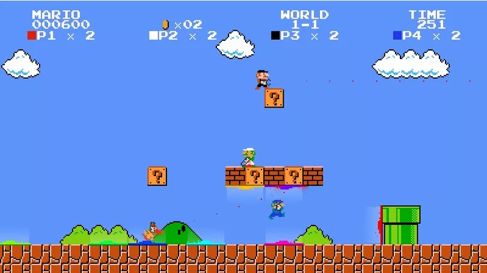
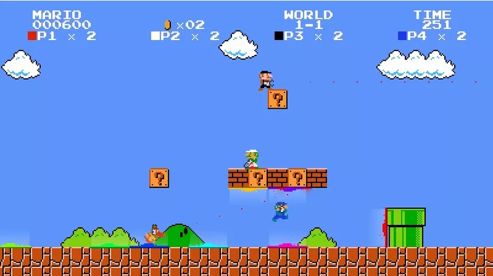

Sobre o jogo

- Estilo: Sigleplayer
- Engine: Construct 3
- Plataforma: PC
- Mecânica: Plataforma
- Dispositivos de Entrada: Teclado
Como jogar
Para andar e pular aperte o clássico W, A, S, D.
Sprites
Inspiração
Super Mário

Para andar e pular aperte o clássico W, A, S, D.
Super Mário
